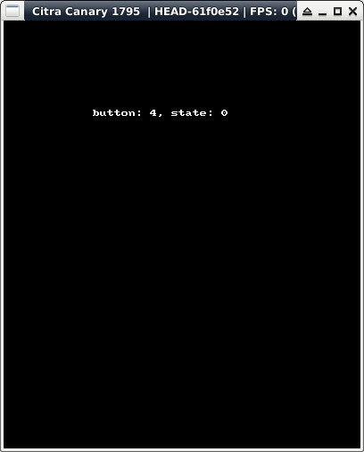

參考資訊：
https://libctru.devkitpro.org/index.html
https://github.com/devkitPro/3ds-examples
main.c
#include <stdio.h>
#include <stdlib.h>
#include <3ds.h>
#include <SDL.h>
#include <SDL_gfxPrimitives.h>
int main(void)
{
char buf[255] = { 0 };
SDL_Event event = { 0 };
SDL_Joystick *joy = NULL;
SDL_Surface *screen = NULL;
SDL_Init(SDL_INIT_VIDEO | SDL_INIT_JOYSTICK);
screen = SDL_SetVideoMode(400, 240, 16, SDL_HWSURFACE);
SDL_FillRect(screen, &screen->clip_rect, SDL_MapRGB(screen->format, 0x00, 0x00, 0x00));
SDL_Flip(screen);
int num = SDL_NumJoysticks();
if (num > 0) {
joy = SDL_JoystickOpen(0);
}
while (1) {
if (SDL_PollEvent(&event)) {
if (event.type == SDL_JOYAXISMOTION) {
SDL_FillRect(screen, &screen->clip_rect, SDL_MapRGB(screen->format, 0x00, 0x00, 0x00));
sprintf(buf, "axis: %d, value: %d", event.jaxis.axis, event.jaxis.value);
stringRGBA(screen, 100, 100, buf, 0xff, 0xff, 0xff, 0xff);
SDL_Flip(screen);
}
if ((event.type == SDL_JOYBUTTONDOWN) || (event.type == SDL_JOYBUTTONUP)) {
SDL_FillRect(screen, &screen->clip_rect, SDL_MapRGB(screen->format, 0x00, 0x00, 0x00));
sprintf(buf, "button: %d, state: %d", event.jbutton.button, event.jbutton.state);
stringRGBA(screen, 100, 100, buf, 0xff, 0xff, 0xff, 0xff);
SDL_Flip(screen);
}
}
SDL_Delay(100);
}
if (joy) {
SDL_JoystickClose(joy);
}
SDL_Quit();
return 0;
}
P.S. 目前無法從SDL去取得DPad、Touch的輸入狀態
完成
